Выбор редакции
SPOTLIGHT


СМОТРИ AUF MEDIA ✦ НОВЫЕ ЛИЦА ✦ НОВЫЕ СЦЕНЫ ✦ READ. WATCH. AUF ✦ СМОТРИ AUF MEDIA ✦ НОВЫЕ ЛИЦА ✦ НОВЫЕ СЦЕНЫ ✦ READ. WATCH. AUF ✦ СМОТРИ AUF MEDIA ✦ НОВЫЕ ЛИЦА ✦ НОВЫЕ СЦЕНЫ ✦ READ. WATCH. AUF ✦

AUF MEDIAНовые материалы и видео AUF MEDIA — письмом на почту.
Культурный журнал о людях, явлениях и событиях в США